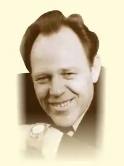

Народився 14 серпня 1925 року в с. Воронькові Бориспільського району в селянській родині. У 1943 р. йде до лав Радянської армії та відразу потрапляє на Лютізький плацдарм, де був поранений. Служив в армії до 1950 р.
Перше місце роботи — Бориспільська районна газета "Колективіст". Потім призначається редактором політвідділівської газети Бурштинської МТС на Івано-Франківщині. Навчався у Вищій партійній школі в Києві. Впродовж 25 років жив і працював в Івано-Франківську. Працював редактором у видавництвах "Каменяр", "Карпати". Поєднував журналістську роботу з діяльністю керівника обласного літературного об'єднання. З 1971 р. був відповідальним секретарем Івано-Франківської обласної організації Спілки письменників України. З 1975 р. жив і працював у Києві.
У 1950 р. а альманасі "Літературна Одеса" були надруковані перші вірші. Перша збірка поезій "Стежками юності" опублікована 1960 р. До 1990 р. вийшли друком близько 20 збірок віршів Івана Карпенка. Успішно виступав в ятнрі гумору та сатири (кн. "Особиста каланча Гаврила Квача", 1963, 1972; "Скорочений Ціцерон", 1982). Основні збірки: "Невідправлені листи" (1965), "Озброєна муза" (1970), "Перевесло" (1975), "З висоти поля" (1978), "Дієслово" (1980), "Блискавиці" (1984), "Вибране" (1985). Після 1990 р. виходять нові книжки "Двоє з листопаду", "Благовіст", поетичні переспіви "Велесової книги" та біблійних книг — Йова, Еклезіаста, Ісаї, псалмів та приповістей Соломонових та ін. Він також автор ряду віршованих книг з Історії України ("На Перуновій обмілині", "Шапка Мономаха", "Заступила чорна хмара та білую хмару"…), зокрема і з часів князювання Володимира Великого та Володимира Мономаха. 2003 написав поему-роздум "Отаман Черпак", присвячену односельцю Іванові Черпакові — командиру Вороньківської сотні, що в лютому 1919 дала бій під більшовицькій орді та на два дні зупинила її просування на Київ. Помер 12 червня 2007 року